Interpolating Gridded Data
Gridded data consists of values or measurements at regularly spaced points that form a grid. Gridded data arises in many areas, such as meteorology, surveying, and medical imaging. In these areas, it is common to take measurements at regular spatial intervals, possibly over time. These ordered grids of data can range from 1-D (for simple time series) to 4-D (for measuring volumes over time) or higher. Some examples of gridded data are:
1-D: Stock prices over time
2-D: Temperature of a surface
3-D: MRI image of a brain
4-D: Ocean measurements in a volume of water over time
In all of these applications, grid-based interpolation efficiently extends the usefulness of the data to points where no measurement was taken. For example, if you have hourly price data for a stock, you can use interpolation to approximate the price every 15 minutes.
MATLAB Gridded Interpolation Functions
MATLAB® provides several tools for grid-based interpolation:
Grid Creation Functions
The meshgrid and ndgrid functions create
grids of various dimensionality. meshgrid can create
2-D or 3-D grids, while ndgrid can create grids with
any number of dimensions. These functions return grids using different
output formats. You can convert between these grid formats using the
pagetranspose (as of R2020b) or
permute functions to
swap the first two dimensions of the grid.
Interpolation Functions
The interp family of functions includes interp1, interp2, interp3, and interpn. Each function is
designed to interpolate data with a specific number of dimensions.
interp2 and interp3 use
grids in meshgrid format, while
interpn uses grids in ndgrid
format.
Interpolation Objects
griddedInterpolant objects
support interpolation in any number of dimensions for data in
ndgrid format. These objects also support
multivalued interpolation (as of R2021a), where each
grid point can have multiple values associated with it.
There are memory and performance benefits to using griddedInterpolant objects over the
interp functions. griddedInterpolant offers substantial performance
improvements for repeated queries of the interpolant object, whereas the
interp functions perform a new calculation each
time they are called. Also, griddedInterpolant stores the sample points in a
memory-efficient format (as a compact grid) and is multithreaded to take advantage of
multicore computer processors.
Grid Representations
MATLAB allows you to represent a grid in one of three representations: full grid, compact grid, or default grid. The default grid and compact grid are used primarily for convenience and improved efficiency, respectively.
Full Grid
A full grid is one in which all points are
explicitly defined. The outputs of ndgrid and
meshgrid define a full grid. You can create full
grids that are uniform, in which points in each
dimension have equal spacing, or nonuniform, in
which the spacing varies in one or more of the dimensions. Uniform grids
can have different spacing in each dimension, as long as the spacing is
constant within each dimension.
| Uniform | Uniform | Nonuniform |
|---|---|---|
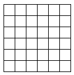
|
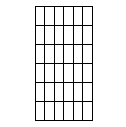
|
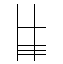
|
An example of a uniform full grid is:
[X,Y] = meshgrid([1 2 3],[3 6 9 12])
X =
1 2 3
1 2 3
1 2 3
1 2 3
Y =
3 3 3
6 6 6
9 9 9
12 12 12Compact Grid
Explicitly defining every point in a grid can consume a lot of memory when
you are dealing with large grids. The compact grid
representation is a way to dispense with the memory overhead of a full
grid. The compact grid representation stores only grid
vectors (one for each dimension) instead of the full grid.
Together, the grid vectors implicitly define the grid. In fact, the inputs
for meshgrid and ndgrid are grid
vectors, and these functions replicate the grid vectors to form the full
grid. The compact grid representation enables you to bypass grid creation
and supply the grid vectors directly to the interpolation function.
For example, consider two vectors, x1 = 1:3 and
x2 = 1:5. You can think of these vectors as a set
of coordinates in the x1 direction and a set of
coordinates in the x2 direction, like so:
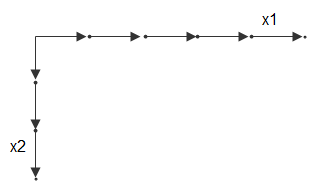
Each arrow points to a location. You can use these two
vectors to define a set of grid points, where one set of coordinates is
given by x1 and the other set of coordinates is given by
x2. When the grid vectors are replicated, they form
two coordinate arrays that make up the full grid:
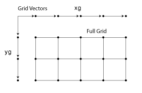
Your input grid vectors might be monotonic or
nonmonotonic. Monotonic vectors contain values
that either increase in that dimension or decrease in that dimension.
Conversely, nonmonotonic vectors contain values that fluctuate. If the
input grid vector is nonmonotonic, such as [2 4 6 3 1],
then [X1,X2] = ndgrid([2 4 6 3 1]) outputs a
nonmonotonic grid. Your grid vectors should be monotonic if you intend to
pass the grid to other MATLAB functions. The sort function is useful
to ensure monotonicity.
Default Grid
In some applications, only the values at the grid points are important and not the distances between grid points. For example, most MRI scans gather data that is uniformly spaced in all directions. In cases like this, you can allow the interpolation function to automatically generate a default grid representation to use with the data. To do this, leave out the grid inputs to the interpolation function. When you leave out the grid inputs, the function automatically considers the data to be on a unit-spaced grid. The function creates this unit-spaced grid while it executes, saving you the trouble of creating a grid yourself.
Example: Temperature Interpolation on 2-D Grid
Consider temperature data collected on a surface at regular 5 cm intervals,
extending 20 cm in each direction. Use meshgrid to create
the full grid.
[X,Y] = meshgrid(0:5:20)
X =
0 5 10 15 20
0 5 10 15 20
0 5 10 15 20
0 5 10 15 20
0 5 10 15 20
Y =
0 0 0 0 0
5 5 5 5 5
10 10 10 10 10
15 15 15 15 15
20 20 20 20 20The (x,y) coordinates of each grid point
are represented as corresponding elements in the X and
Y matrices. The first grid point is given by
[X(1) Y(1)], which is [0 0], the next
grid point is given by [X(2) Y(2)], which is [0
5], and so on.
Now, create a matrix to represent temperature measurements on the grid and then plot the data as a surface.
T = [1 1 10 1 1;
1 10 10 10 10;
100 100 1000 100 100;
10 10 10 10 1;
1 1 10 1 1];
surf(X,Y,T)
view(2)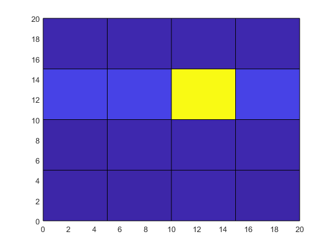
Although the temperature at the center grid point is large, its location and influence on surrounding grid points is not apparent from the raw data.
To improve the resolution of the data by a factor of 10, use
interp2 to interpolate the temperature data onto a
finer grid that uses 0.5 cm intervals. Use meshgrid again
to create a finer grid represented by the matrices Xq and
Yq. Then, use interp2 with the
original grid, the temperature data, and the new grid points, and plot the
resulting data. By default, interp2 uses linear
interpolation in each dimension.
[Xq,Yq] = meshgrid(0:0.5:20); Tq = interp2(X,Y,T,Xq,Yq); surf(Xq,Yq,Tq) view(2)
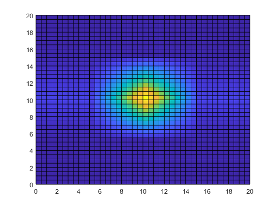
Interpolating the temperature data adds detail to the image and greatly improves the usefulness of the data within the area of measurements.
Gridded Interpolation Methods
The grid-based interpolation functions and objects in MATLAB offer several different methods for interpolation. When choosing an interpolation method, keep in mind that some require more memory or longer computation time than others. You may need to trade off these resources to achieve the desired smoothness in the result. The following table gives a preview of each interpolation method applied to the same 1-D data, and also provides an overview of the benefits, trade-offs, and requirements for each method.
| Method | Description |
|---|---|
|
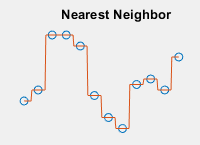 | The interpolated value at a query point is the value at the nearest sample grid point.
|
|
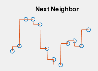 | The interpolated value at a query point is the value at the next sample grid point.
|
|
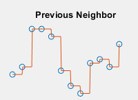 | The interpolated value at a query point is the value at the previous sample grid point.
|
|
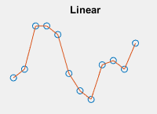 | The interpolated value at a query point is based on linear interpolation of the values at neighboring grid points in each respective dimension.
|
|
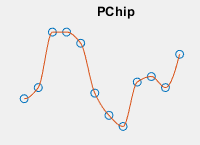 | The interpolated value at a query point is based on a shape-preserving piece-wise cubic interpolation of the values at neighboring grid points.
|
|
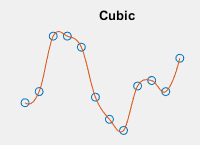 | The interpolated value at a query point is based on cubic interpolation of the values at neighboring grid points in each respective dimension.
|
|
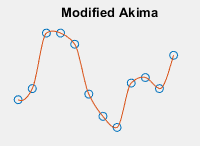 | The interpolated value at a query point is based on a piecewise function of polynomials with degree at most three evaluated using the values of neighboring grid points in each respective dimension. The Akima formula is modified to avoid overshoots.
|
|
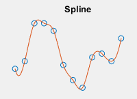 | The interpolated value at a query point is based on a cubic interpolation of the values at neighboring grid points in each respective dimension.
|
See Also
interp1 | interp2 | interp3 | interpn | griddedInterpolant